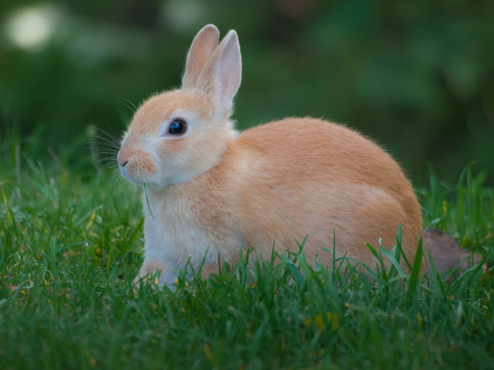
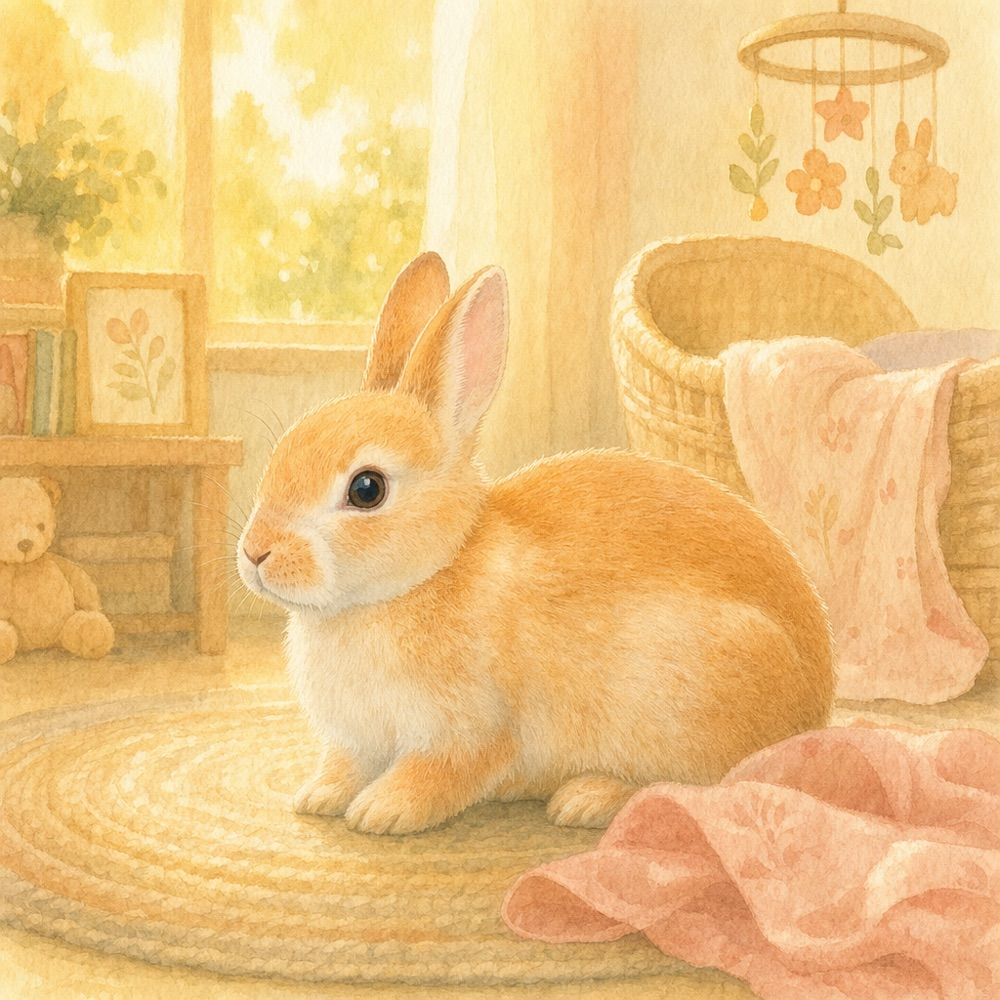

Books that look like your actual pet.
Upload one photo of your own pet, and we’ll hand-finish an illustrated keepsake book where they’re the star — their real face, their real coat, on every page. A joyful adventure, the story of the day they came home, a tribute while they’re still beside you, or a gentle goodbye.


Yes — it really is them.
Other personalized pet books pick a breed from a list. We don’t. Every illustration is painted from the photo you upload, so the pet in the book has your pet’s markings, their face, their particular look.

From your photoWhat you upload

The page we paintedWhat you keep
This is a real sample, painted from the real photo beside it. Every book is reviewed by a person before it reaches you — if a page doesn’t look like your pet, it doesn’t go out.
For the days you have — and the goodbye.
A book to celebrate them.
Joyful, living titles — a kids’ adventure where your pet is the hero, the story of their gotcha day, a letter in their happy voice, a tribute while they’re still curled up beside you, or a keepsake for the new big sibling. For a birthday, an adoption, or no reason at all.
Five celebration titles See the celebration books For the goodbyeA book to remember them.
Gentle memorial titles — a story to help a child grieve, and a pair of goodbye letters: one in your pet’s voice, one in yours. Made slowly, with care.
Three memorial titles See the memorial booksTell us about them
A few gentle questions, your pet’s name and quirks, and one photo you love.
We paint it by hand
Every illustration is made to look like your actual pet — not a breed picked from a list — and reviewed by a person.
Your book arrives
A print-quality PDF, emailed within 24–48 hours, ready to keep or print and frame.
The honest answers.
Will it really look like my pet?
That’s the whole point. We paint from the photo you upload — same markings, same face — not a generic breed picture. A person checks every book before it’s sent; if a page doesn’t look like your pet, it doesn’t go out.
Is this just AI art?
We’re honest about it: the art is made with the help of AI image generation, guided from your photo, and then finished and reviewed by a person before it reaches you. Made with a machine, finished by a human, made for you.
What if I’m not happy with it?
Tell us within 30 days and we’ll remake it, free. If we still can’t make it something you’re glad to keep, we’ll refund you in full. You don’t have to explain or justify.
How long does it take?
Each book is made to order and hand-finished, so it’s not instant. You’ll have it as a print-quality PDF within 24–48 hours of ordering.
Can I print it?
Yes. You receive a print-quality PDF — keep it on your phone, print it at home, or take it to a print shop. The letter titles are designed to be printed on cardstock and framed.
What do you do with my photo?
Your photo and the details you share are used only to make your book — nothing else.
Start the book that looks like them.
One photo is all it takes. We’ll do the rest — slowly, by hand, and made for you.
See the books